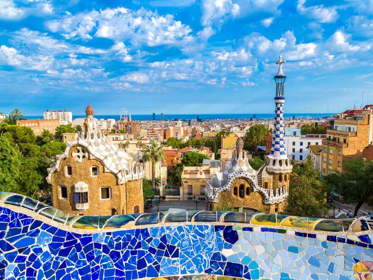
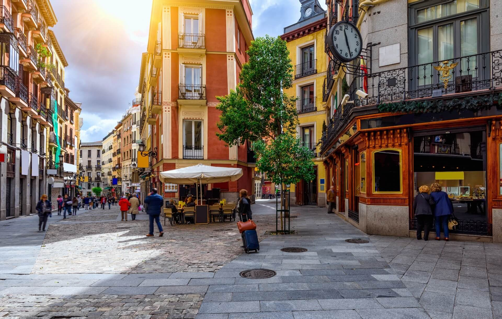
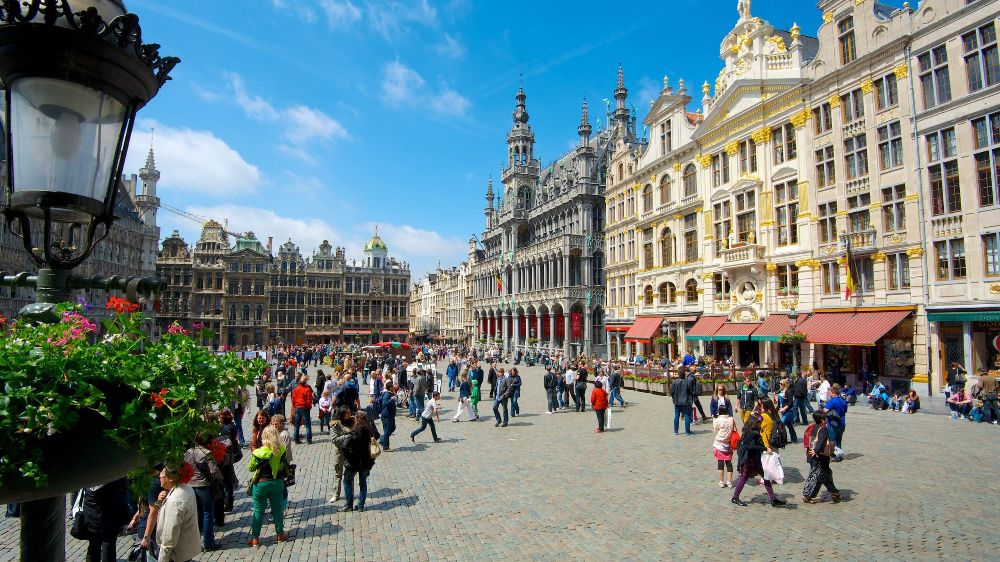
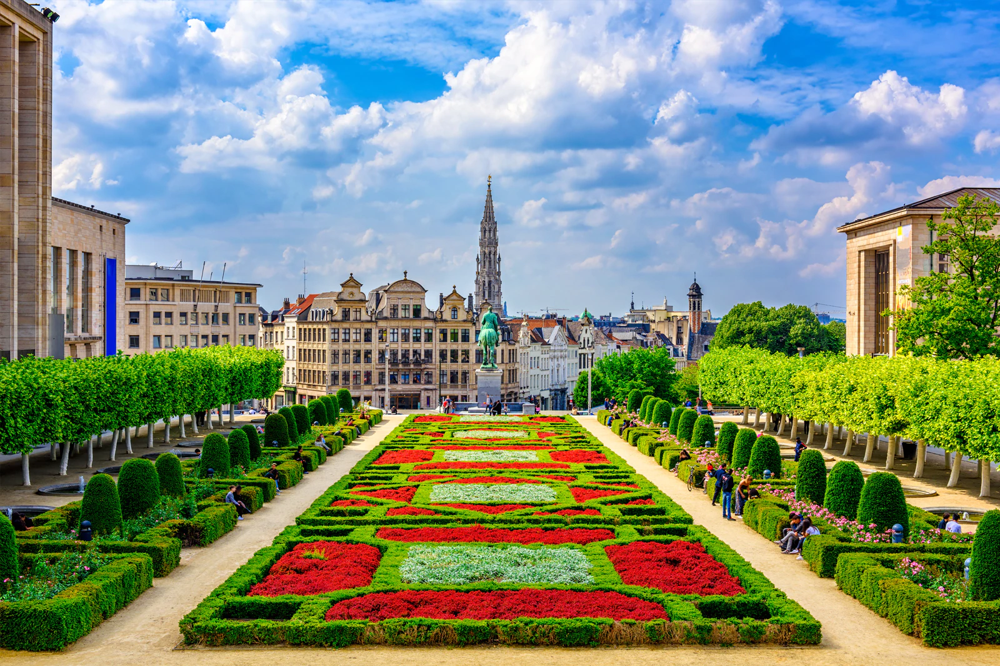
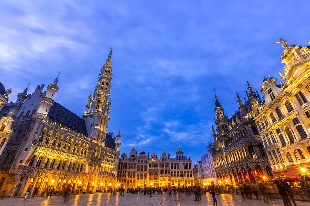
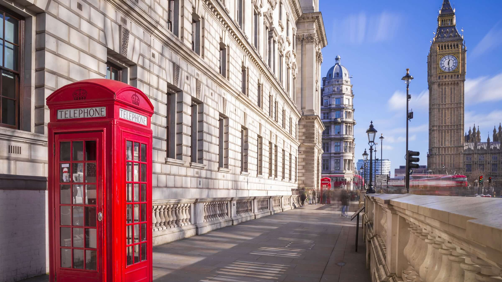
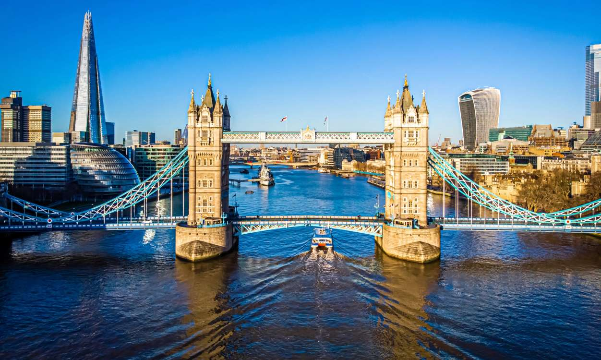
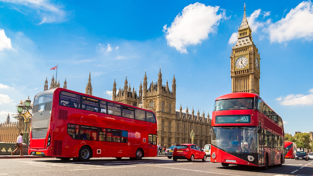
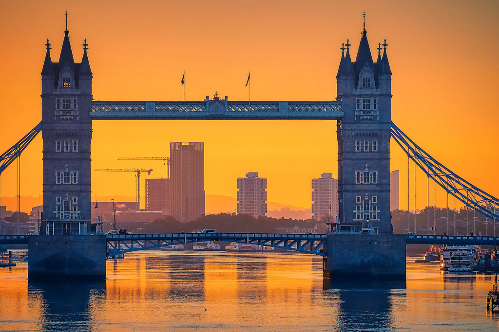

Paises Bajos
Amsterdam
Ámsterdam (en neerlandés, Amsterdam) es la capital de los Países Bajos.
La ciudad está situada entre la bahía del IJ, al norte, y a las orillas del río Amstel, al sureste.
Fundada en el siglo xii como un pequeño pueblo pesquero, en la actualidad es la ciudad más grande del
país y un gran centro financiero y cultural de proyección internacional.
Ver mas
Tiene una población de unos 905 234 habitantes y en su área metropolitana residen aproximadamente
1,5 millones. Cabe destacar que Ámsterdam forma parte de la gran conurbación neerlandesa llamada
Randstad (junto con las ciudades de La Haya, Róterdam y Utrecht), que cuenta con más de 6,5 millones
de habitantes. Este núcleo es una de las conurbaciones más grandes de Europa.
El centro histórico de la ciudad fue construido en gran parte en el siglo xvii y es hoy en día uno
de los centros históricos más grandes de Europa. En aquella época se construyeron una serie de
canales semicirculares alrededor del casco antiguo ya existente de la ciudad. Después se edificaron
las nuevas calles que ahora habían sido creadas con casas y almacenes en un estilo típico neerlandés
que es una de las imágenes más famosas de Ámsterdam y del país. Al igual que otras ciudades de
Europa septentrional con abundancia de agua, como Brujas, Hamburgo y Estocolmo, es conocida
coloquialmente como la «Venecia del norte».
Aunque durante casi toda su historia (excepto entre 1808-1810) ha sido la capital oficial de los
Países Bajos, nunca ha sido la sede de la justicia, el gobierno o el parlamento neerlandés, ya que
todos estos órganos se encuentran en la ciudad de La Haya, que por tanto es la principal ciudad del
país con respecto a política y justicia. Ámsterdam tampoco es la capital de la provincia de Holanda
Septentrional, que siempre ha sido Haarlem.
Rotterdam
Róterdam (en neerlandés, Rotterdam; [rroterdám] Acerca de este sonido
(escuchar)) es una ciudad neerlandesa situada al oeste del país, en la provincia de Holanda Meridional,
y puerto sobre el río Mosa, cerca de La Haya. Situada a 30 km del mar, tiene una población de 634 660
habitantes.
Es la segunda ciudad más poblada del país y el área metropolitana de Róterdam alcanza los 2,82 millones
de personas.
El panorama urbano de Róterdam le valió el apodo de “La Manhattan del Mosa”. Además, la ciudad es
conocida por la Universidad Erasmus, su vida cultural, su patrimonio marítimo y su arquitectura
innovadora. Por su parte, el puerto de Róterdam, Europoort, es el más grande de Europa y uno de los
veinte puertos con mayor tráfico de contenedores a nivel mundial. Está comunicado con el río Rin.
Ver mas
Establecida en el siglo xiii, Róterdam obtuvo el estatus de ciudad en 1340. El puerto de la ciudad
vio aumentar su importancia en el siglo xvi gracias al declive de Amberes, la fundación de las
Compañía Neerlandesa de las Indias Orientales y la construcción naval. En el siglo xvii, era la
segunda ciudad comercial en las Provincias Unidas de los Países Bajos, y la industria textil se
desarrolló allí. El siglo xviii marcó una disminución relativa, y su puerto solo se recuperó después
de la construcción de un canal artificial, el Nieuwe Waterweg (1866-1872).
Posteriormente, Róterdam hubo de reinventarse tras la Segunda Guerra Mundial. El 14 de mayo de 1940
el bombardeo de la Alemania nazi acabó con todo el centro urbano de la ciudad. Desde las postguerra,
la modernidad y la vanguardia arquitectónica han llenado las calles de la ciudad. El puerto ha
ganado 2000 hectáreas de tierra en el mar del Norte para expandirse un 20 por ciento, y Róterdam
floreció con rapidez en las décadas siguientes al final de la guerra gracias a la reducción de las
barreras comerciales entre los Estados miembros de la Unión Europea (UE).
Primer centro industrial de los Países Bajos, la ciudad es también una de las principales puertas de
entrada de la UE. El puerto, las industrias químicas y los sectores de los transportes y de la
distribución son las principales fuentes de empleo.
Como iconos de la ciudad destacan el Timmerhuis que acoge el Museo de Róterdam, y la Factoría Van
Nelle levantada en los años 1930 y declarada Patrimonio de la Humanidad. Pero el gran museo de arte
de la ciudad es el Boijmas van Beunigen, donde están representados numerosos periodos y movimientos,
incluidos los principales representantes del Siglo de Oro. Róterdam es también considerada como un
“museo al aire libre”, especialmente en lo que se refiere a la arquitectura contemporánea, con
edificios representativos como el Markthal. Otra obra significativa es la Estación Central, o las
Casas cubo.
Grecia
Atenas
Atenas (griego antiguo: Ἀθῆναι [Athēnai]; griego moderno: Αθήνα [Athína]) es la capital de Grecia y actualmente la ciudad más grande, importante y poblada del país. La población del municipio de Atenas era de 1 500 000 (en 2022), pero su área metropolitana es mucho mayor y comprende una población de 6 000 000 (en 2022), siendo la tercera más grande de la Unión Europea, detrás de París (13 millones) y Madrid (6,8 millones). Es el centro principal de la vida ;económica, cultural y política griega.
Ver mas
La historia de Atenas se extiende más de tres mil años, lo que la convierte en una de las ciudades
habitadas más antiguas. Durante la época clásica de Grecia, fue una poderosa ciudad-estado que nació
junto con el desarrollo de la navegación marítima del puerto de El Pireo y que tuvo un papel
fundamental en el desarrollo de la democracia. También fue un centro cultural donde vivieron muchos
de los grandes artistas, escritores y filósofos de la Antigüedad. Estas contribuciones de Atenas al
pensamiento de su época tuvieron una gran influencia en el desarrollo de Grecia, de Roma y de la
cultura occidental.
Atenas es una ciudad rica en restos arqueológicos de extraordinaria importancia, de los cuales el
más famoso es el Partenón en la Acrópolis. Además de construcciones de la época clásica griega, se
conservan monumentos romanos y bizantinos, así como varias construcciones modernas notables.
Creta
Creta (en griego clásico y moderno: Κρήτη [Kriti]; en latín: Creta) es
la isla más grande de Grecia y la quinta en tamaño del mar Mediterráneo. El archipiélago cretense
conforma una de las trece periferias y una de las siete administraciones descentralizadas de Grecia.
Posee una superficie de 8300 km², una costa de 1040 kilómetros de longitud y una población de unos 620
000 habitantes. Su capital es Heraclión.
Creta fue antiguamente el centro de la civilización minoica (2700-1420 a. C.), considerada una de las
más antiguas civilizaciones de las que se tiene registros en Europa. Hasta principios del siglo xx
también se la conoció con el nombre de Candía.
España
Barcelona
Barcelona es una ciudad española, capital de la comunidad autónoma de Cataluña, de la provincia homónima y de la comarca del Barcelonés. Con una población de 1 636 732 habitantes en 2021, es la segunda ciudad más poblada de España y de la península ibérica después de Madrid, y la décima de la Unión Europea. El área metropolitana de Barcelona tiene 3 339 279 (2020) y el ámbito metropolitano de Barcelona 4 895 876 habitantes (2019), siendo así la quinta ciudad de mayor población de la Unión Europea.
Ver mas
Cuenta con un PIB nominal de 142 223 millones USD y un PIB per cápita nominal de 30 619 USD, lo que
representa un PIB PPA per cápita de 36 240 USD, siendo la segunda área metropolitana española en
actividad económica y la decimoséptima europea después de Londres, París, Rin-Ruhr, Ámsterdam,
Milán, Bruselas, Moscú, Fráncfort del Meno, Múnich, Madrid, Berlín, Viena, Roma, Copenhague,
Estocolmo y Birmingham.
Se ubica a la orilla del mar Mediterráneo, a unos 120 km al sur de la cadena montañosa de los
Pirineos y de la frontera con Francia, en un pequeño llano litoral limitado por el mar al este, la
sierra de Collserola al oeste, el río Llobregat al sur y el río Besós al norte. Por haber sido
capital del condado de Barcelona, se suele aludir a ella con la denominación antonomástica de
«ciudad condal».
La historia de Barcelona se extiende a lo largo de 4000 años, desde finales del Neolítico, con los
primeros restos hallados en el territorio de la ciudad, hasta la actualidad. El sustrato de sus
habitantes aúna a los pueblos íberos, romanos, judíos, visigodos, musulmanes y cristianos. Como
capital de Cataluña y segunda ciudad de España en importancia, ha forjado su relevancia con el
tiempo, desde ser una pequeña colonia romana hasta convertirse en una ciudad valorada
internacionalmente por aspectos como su economía, patrimonio artístico, cultura, deporte y vida
social.
Barcelona ha sido escenario de diversos acontecimientos internacionales que han contribuido a
consolidarla, desarrollarla y darle proyección mundial. Los más relevantes han sido la Exposición
Universal de 1888, la Exposición Internacional de 1929, los Juegos Olímpicos de 1992 y el Fórum
Universal de las Culturas 2004. Es también sede del secretariado de la Unión para el Mediterráneo.
En la actualidad, Barcelona está reconocida como una ciudad global por su importancia cultural,
financiera, comercial y turística. Tiene uno de los puertos más importantes del Mediterráneo y es
también un importante punto de comunicaciones entre España y Francia, debido a las conexiones por
autopista y alta velocidad ferroviaria. El Aeropuerto Josep Tarradellas Barcelona-El Prat, situado a
15 km del centro de la ciudad, fue utilizado por más de 52,6 millones de pasajeros en 2019.
-

-

Madrid
Madrid es un municipio y una ciudad de España, con categoría histórica de villa, es la capital del Estado y de la Comunidad de Madrid. Su término municipal, el más poblado de España, tiene empadronadas a 3 305 408 personas (INE 2021), constituyéndose como la segunda ciudad más poblada de la Unión Europea, así como su área metropolitana, con 6 779 888 habitantes empadronados.
Ver mas
Cuenta con un PIB nominal de 133 129 millones de euros —el 12 % del PIB nacional— y un PIB per
cápita nominal de 41 600 € (2018), siendo la 1.ª área metropolitana española en actividad económica
−19 % del PIB. Es también la primera en más pernoctaciones hoteleras.
Como capital de España, alberga las sedes del Gobierno de España y sus Ministerios, de las Cortes
Generales (Congreso y Senado), del Tribunal Supremo y del Tribunal Constitucional, así como la
residencia oficial de los reyes de España y del presidente del Gobierno. En el plano económico,
según el informe realizado por PwC sobre la evolución de la población y la economía de las
principales capitales mundiales en 2009, es la cuarta ciudad más rica de Europa en PIB per cápita
medido en términos de Paridad de Poder de Compra, tras Londres, París y Moscú. En 2009, el 50,1 % de
los ingresos de las 5000 principales empresas españolas son generados por sociedades con sede social
en Madrid, que suponen el 31,8 % de ellas. Es sede del 4.º mayor mercado de valores de Europa, 2.º
en el ámbito iberoamericano (Latibex), y de varias grandes corporaciones. Es la 8.ª ciudad del mundo
con mayor presencia de multinacionales.
En el plano internacional acoge la sede central de la Organización Mundial del Turismo (OMT),
perteneciente a la ONU, la sede de la Organización Internacional de Comisiones de Valores (OICV), la
sede de la Secretaría General Iberoamericana (SEGIB), la sede de la Organización de Estados
Iberoamericanos para la Educación, la Ciencia y la Cultura (OEI), el Organismo Internacional de
Juventud para Iberoamérica (OIJ), y la sede de Public Interest Oversight Board (PIOB). También
alberga las principales instituciones internacionales reguladoras y difusoras del idioma español: la
Comisión Permanente de la Asociación de Academias de la Lengua Española, y sedes centrales de la
Real Academia Española (RAE), del Instituto Cervantes y de la Fundación del Español Urgente
(Fundeu).
Madrid organiza ferias como FITUR, Madrid Fusión, ARCO, SIMO TCI, el Salón del Automóvil y la
Cibeles Madrid Fashion Week.
Es un influyente centro cultural y cuenta con museos de referencia internacional, entre los que
destacan el Museo del Prado, el Museo Nacional Centro de Arte Reina Sofía, el Thyssen-Bornemisza y
CaixaForum Madrid, que ocupan, respectivamente, el 14.º, 10.º, 67.º y 79.º puesto entre los museos
más visitados del mundo. En 2021, el Paseo del Prado y el Buen Retiro, paisaje de las artes y las
ciencias fue incluido en la lista de Patrimonio de la Humanidad por la Unesco.
Los orígenes de la ciudad son objeto de revisión histórica tras hallazgos de enterramientos
visigodos, que han venido a confirmar que el posterior asentamiento fortificado musulmán de Maǧrīţ
(del siglo ix) se había asentado sobre un vicus visigodo del siglo vii llamado Matrice o matriz
('arroyo').
Las excavaciones arqueológicas también desvelan restos que se atribuyen al Madrid romano, así como
de restos que se remontan a los carpetanos o al periodo prerromano. No sería hasta el siglo xi
cuando Madrid fue incorporada al Reino de León, tras su conquista por Alfonso VI de León en 1083.
Fue designada como sede de la Corte por el rey Felipe II en 1561, convirtiéndose en la primera
capital permanente de la monarquía española y ha mantenido la capitalidad del país desde entonces,
salvo por breves intervalos de tiempo.
-

-

Palma de Mallorca
Palma de Mallorca (oficialmente Palma) es una ciudad y municipio español, capital de la isla de Mallorca y de la comunidad autónoma de las Islas Baleares. Es además sede del partido judicial número tres de la provincia y de la diócesis de Mallorca. Está ubicada en la parte occidental del mar Mediterráneo y, dentro de la isla, hacia el suroeste. Se encuentra a unos 250 km al este de la península ibérica.
Ver mas
Su término municipal ocupa una extensión de 208,63 km² que se extienden entre la sierra de Na
Burguesa y el Prado de Sant Jordi. Se sitúa en el centro de la bahía de Palma, a unos 13 m sobre el
nivel del mar. La atraviesan varios torrentes, como el de la Riera y el de Gros.
Con 416 065 habitantes en enero de 2019, Palma es la octava mayor ciudad de España por población y
la primera de las Islas Baleares. Su área metropolitana engloba nueve localidades con 560 240
habitantes, repartidos en una superficie de 1015,88 km², siendo la 14.ª de España.
Fue fundada con el nombre de Palma por el cónsul romano Quinto Cecilio Metelo Baleárico en el año
123 a. C. Se estima que su asentamiento actual corresponde con las ruinas romanas que se encuentran
bajo su casco histórico, aunque aún no existen pruebas irrefutables. Después de estar en manos de
los vándalos y los árabes en 903, fue conquistada por el rey Jaime I de Aragón el 31 de diciembre de
1229, convirtiéndose en la Ciutat de Mallorca, capital de su propio reino, que decayó tras su
incorporación a la Corona de Aragón en 1279.
En 1715 entraron en vigor los Decretos de Nueva Planta, recuperando la ciudad su topónimo romano,
Palma. Ya en el siglo xx, fue protagonista de un intenso auge turístico durante las décadas de 1960
y 1970. En la actualidad constituye un notable centro económico y cultural a nivel insular,
autonómico y nacional.
Alemania
Berlin
Berlín (en alemán, Berlin, pronunciado /bɛʁˈliːn/ ( escuchar)) es la capital de Alemania y uno de los dieciséis estados federados alemanes. Se localiza al noreste de Alemania. Por la ciudad fluyen los ríos Spree, Havel, Panke, Dahme y Wuhle. Con una población de 3,77 millones de habitantes, Berlín es la ciudad más poblada del país y de Europa Central, así como la primera ciudad en población y la cuarta aglomeración urbana entre los países de la Unión Europea.
Ver mas
Fue sucesivamente capital del Reino de Prusia (1701-1918), del Reich alemán (1871-1919), de la
República de Weimar (1919-1933) y del Tercer Reich (1933-1945). Después de la Segunda Guerra
Mundial, la ciudad fue dividida; la parte este de la ciudad se convirtió en la capital de la
República Democrática Alemana, mientras que la zona oeste de la ciudad se convirtió en un enclave de
la República Federal de Alemania en el interior de la Alemania Oriental.
Berlín cuenta con unas 2000 emprendimientos tecnológicos activos (2018), la mayoría de las cuales
están enfocadas en software, tecnología e innovación para las empresas emergentes, biotecnología,
comercio electrónico, movilidad y ciberseguridad. Así es como se posiciona como el segundo centro de
emprendedorismo más grande de Europa.
Berlín es una ciudad global y un centro cultural y artístico de primer nivel. Las 40 universidades
de la ciudad conforman la mayor concentración de centros de estudios superiores de toda Alemania.
Munich
Múnich (en alemán, München, pronunciado /ˈmʏnçn̩/ ( escuchar); en
austrobávaro Minga) es la capital del estado federado de Baviera y la tercera ciudad de Alemania por
número de habitantes, y la 11.ª de la Unión Europea.
Además es la ciudad alemana donde más compañías se encuentran del índice bursátil DAX, siendo la región
un importante motor económico de las industrias financiera, tecnológica, de automoción, y servicios.
Entre las compañías con sede global en Múnich, destacan Allianz, BMW, B/S/H/, FlixBus, Infineon, MAN,
MTU, Munich RE, Osram, Sixt, el Grupo Siemens, y TÜV SÜD.
Ver mas
Con base en el reconocido estudio y ranking de Países con Mayor Calidad de Vida en el Mundo de
Mercer en 2019, Múnich es la ciudad con mayor calidad de vida en Alemania, así como la tercera en el
mundo, prominente posición mundial en la que en el mismo año coincidió el estudio Monocle’s Quality
of Life 2019.
La ciudad se encuentra sobre el río Isar, al norte de los Alpes Bávaros. El lema de la ciudad es
München mag Dich (A Múnich le gustas). Antes de 2006 era Weltstadt mit Herz (Ciudad cosmopolita con
corazón). Su nombre, München, deriva de Munichen, del alto alemán antiguo, que significa «en el
lugar de los monjes». El nombre de la ciudad viene de los monjes benedictinos que fundaron la
ciudad; de ahí que en el escudo de la ciudad haya un monje. Los colores oficiales de la ciudad son
el negro y el oro, colores del Sacro Imperio Romano Germánico, desde tiempos de Luis IV de Baviera.
El área metropolitana de Múnich incluye algunas localidades colindantes de esta ciudad. Según un
estudio de 2009, Múnich es la ciudad con la mejor calidad de vida de Alemania.
El Múnich moderno es un centro financiero y editorial. En cuanto a innovación social y económica, la
ciudad se encuentra en el 15.º lugar entre 289 ciudades según un estudio de 2010, y es la quinta
ciudad alemana para el 2thinknow Innovation Cities Index basado en un análisis de 162 indicadores.
Belgica
Bruselas
Bruselas (en francés: Bruxelles Acerca de este sonido [bʁysɛl] (?·i); en
neerlandés, Brussel pronunciado /ˈbrɵsəl/ ( escuchar) y en alemán, Brüssel, pronunciado /ˈbʁʏsl̩/ (
escuchar)) es la capital de Bélgica, de la Comunidad Francesa de Bélgica y de la Comunidad Flamenca. Se
le conoce popularmente también como capital de la Unión Europea (UE) junto a Luxemburgo y Estrasburgo.
Bruselas es un municipio situado en la región administrativa "Bruselas-Capital" que es una de las tres
regiones de Bélgica, con la Región Valona y la Región Flamenca.
Como capital del Estado, Bruselas es la sede del gobierno y el Parlamento. Alberga también, el Castillo
de Laeken, residencia del rey Felipe de Bélgica y la familia real belga
-

-

-

-

Brujas
Brujas (en neerlandés, Brugge; pronunciado /ˈbrʏɣə/; en francés, Bruges pronunciado /bʁyʒ(ə)/) es una ciudad belga. Es la capital de la provincia de Flandes Occidental. Situada en el extremo noroeste de Bélgica a 90 km de la capital, Bruselas, cuenta en su núcleo urbano con una población de 117 000 habitantes. La ciudad no cuenta con salida al mar, no obstante, se encuentra a 20 km de la localidad de Zeebrugge.
Ver mas
Su nombre proviene del germánico occidental "Bryggia" ("puentes", "muelles", "atracaderos"). Es
interesante destacar que, en el neerlandés, «brug» significa «puente», y que esta ciudad ostenta
como nombre el plural de esta palabra, debido a la gran cantidad de puentes que en ella existen.
El mayor atractivo de Brujas es su casco histórico, declarado Patrimonio de la Humanidad por la
Unesco en 2000. Aunque en gran parte ha sido reconstruido, dicho centro urbano es uno de los más
grandes atractivos europeos, ya que mantiene intactas las estructuras. Al igual que Ámsterdam,
Gotemburgo y Hamburgo, entre otras, Brujas es conocida como «la Venecia del norte», debido a la gran
cantidad de canales que atraviesan la ciudad y a la belleza de los mismos.
Italia
Roma
Roma es una ciudad italiana, capital de la región del Lacio y de Italia. Con una población de 2 857 321 habitantes, es el municipio más poblado de Italia y la tercera ciudad más poblada de la Unión Europea. Por antonomasia, se la conoce desde la Antigüedad como la Urbe (Urbs). También es llamada «La Ciudad Eterna» (en italiano, Città Eterna).
Ver mas
En el transcurso de su historia, que abarca tres milenios, llegó a extender sus dominios sobre toda
la cuenca del Mediterráneo y gran parte de Europa, Oriente Próximo y África del Norte. Como capital
de la República y del Imperio romano, llegó a ser la primera gran metrópolis de la humanidad, centro
de una de las civilizaciones antiguas más importantes. Influyó en la sociedad, la cultura, la
lengua, la literatura, la música, el arte, la arquitectura, la filosofía, la gastronomía, la
religión, el derecho y la moral de los siglos sucesivos.
Es la ciudad con la más alta concentración de bienes históricos y arquitectónicos del mundo; su
centro histórico delimitado por el perímetro que marcan las murallas aurelianas, superposición de
huellas de tres milenios, es la máxima expresión del patrimonio histórico, artístico y cultural del
mundo occidental. En 1980, junto a las propiedades extraterritoriales de la Santa Sede que se
encuentran en la ciudad y la basílica de San Pablo Extramuros, fue incluida en la lista del
Patrimonio de la Humanidad de la Unesco.
Roma es el corazón geográfico de la religión católica, ciudad santa del catolicismo y destino de
peregrinación (vías romeas) y también la única ciudad del mundo que tiene en su interior una entidad
estatal autónoma: el enclave de la Ciudad del Vaticano, que se encuentra bajo el poder temporal del
papa. Por tal motivo se le ha conocido también como la capital de dos Estados.
Pisa
Pisa es una ciudad de la región italiana de la Toscana, capital de la provincia homónima. Entre los monumentos más importantes de la ciudad figura —en la célebre Piazza dei Miracoli, declarada Patrimonio de la Humanidad— la catedral, construida en mármol entre los años 1064 y 1118, en estilo románico pisano, con su portal en bronce de Bonanno Pisano y el púlpito de Giovanni Pisano.
Ver mas
Al lado de la catedral se encuentra la llamativa torre inclinada, del siglo xii, con una altura de
58,36 metros, que sufrió su característica inclinación inmediatamente después de iniciarse su
construcción.
Debido a la naturaleza del terreno, existen en Pisa otras dos torres inclinadas: el campanario de la
iglesia de San Nicola, en el extremo opuesto de Vía Santa María, junto al Lungarno; y el campanario
de la iglesia de San Michele degli Scalzi, en la mitad del paseo fluvial delle Piagge, sito en la
parte este de la ciudad (en este caso incluso la iglesia está inclinada). También está inclinado el
Palacio Toscanini en "Lungarno Pacinotti".
La razón de que tal cantidad de edificios, sobre todo los altos y esbeltos como los campanarios, se
encuentren inclinados, es la naturaleza pantanosa del terreno sobre el que está situada la ciudad,
que en muchos casos cede y se asienta con el peso de estas edificaciones.
Florencia
Florencia (en italiano, Firenze) es una ciudad situada en el norte de la región central de Italia, capital y ciudad más poblada de la ciudad metropolitana homónima y de la región de Toscana, de la que es su centro histórico, artístico, económico y administrativo. Cuenta con unos 378 239 habitantes, y es el centro de un área metropolitana de aproximadamente un millón y medio de habitantes.
Ver mas
Capital de Italia entre 1865 y 1871 durante la Unificación italiana, en la Edad Media fue un
importante centro cultural, económico y financiero. Conoció su época de mayor esplendor tras la
instauración del Gran Ducado de Toscana bajo el dominio de la dinastía Médici.
Florencia es el núcleo urbano en el que se originó en la segunda mitad del siglo xiv el movimiento
artístico denominado Renacimiento, y se la considera una de las cunas mundiales del arte y de la
arquitectura así como también una de las ciudades más hermosas del mundo. Su centro histórico fue
declarado Patrimonio de la Humanidad en 1982 y en él destacan obras medievales y renacentistas como
la cúpula de Santa María del Fiore, el Ponte Vecchio, la Basílica de Santa Cruz, el Palazzo Vecchio
y museos como los Uffizi, el Bargello o la Galería de la Academia, que acoge al David de Miguel
Ángel.
Inglaterra
Londres
Londres (en inglés, London, pronunciado /ˈlʌndən/ ( escuchar)) es la
capital y mayor ciudad del Reino Unido. Situada a orillas del río Támesis, Londres es un importante
asentamiento humano desde que fue fundada por los romanos con el nombre de Londinium hace casi dos
milenios.
El núcleo antiguo de la urbe, la City de Londres, conserva básicamente su perímetro medieval de una
milla cuadrada. Desde el siglo xix el nombre «Londres» también hace referencia a toda la metrópolis
desarrollada alrededor de este núcleo. El grueso de esta conurbación forma la región de Londres y el
área administrativa del Gran Londres, gobernado por el alcalde y la asamblea de Londres.
Ver mas
Londres es una ciudad global, uno de los centros neurálgicos en el ámbito de las artes, el comercio,
la educación, el entretenimiento, la moda, las finanzas, los medios de comunicación, la
investigación, el turismo o el transporte. Es el principal centro financiero del mundo junto con
Nueva York.Con un PIB de 801,66 mil millones de euros en 2017, es la economía urbana más grande del
continente europeo.
Londres es también una capital cultural mundial, la ciudad más visitada considerando el número de
visitas internacionales y tiene el mayor sistema aeroportuario del mundo según el tráfico de
pasajeros. Asimismo, las 43 universidades de la ciudad conforman la mayor concentración de centros
de estudios superiores de toda Europa. En el año 2012 Londres se convirtió en la única ciudad en
albergar la celebración de tres Juegos Olímpicos de Verano.
En esta ciudad multirracial convive gente de un gran número de culturas que hablan más de
trescientos idiomas distintos. La Autoridad del Gran Londres estima que en 2015 la ciudad tiene 8,63
millones de habitantes, que supone el 12,5 % del total de habitantes del Reino Unido. El área urbana
del Gran Londres, con 10 470 000 habitantes, es la segunda más grande de Europa, pero su área
metropolitana, con una población estimada de entre 12 y 14 millones, es la mayor del continente.
Desde 1831 a 1925 Londres, como capital del Imperio británico, fue la ciudad más poblada del mundo.
Londres cuenta con cuatro enclaves declarados Patrimonio de la Humanidad: la Torre de Londres, el
Real Jardín Botánico de Kew, el sitio formado por el Palacio, la Abadía de Westminster, la Iglesia
de Santa Margarita y Greenwich (donde se encuentra el Real Observatorio que marca el meridiano de
Greenwich y el tiempo medio). Otros lugares famosos de la ciudad son el Palacio de Buckingham, el
London Eye, Piccadilly Circus, la Catedral de San Pablo, el Puente de la Torre o Trafalgar Square.
Londres cuenta también con numerosos museos, galerías de arte, bibliotecas, eventos deportivos y
otras instituciones culturales como el Museo Británico, la National Gallery, la Tate Modern, la
Biblioteca Británica y los cuarenta teatros del West End. El metro de Londres, que en 2013 cumplió
150 años, es el más antiguo del mundo.
-

-

-

-

-

Liverpool
Liverpool es una ciudad y municipio metropolitano del condado de Merseyside, en la región Noroeste de Inglaterra, sobre el lado este del estuario del río Mersey en el Reino Unido. Limita al sur con Gales al este con el de Knowsley, y al sur y oeste con el mencionado río. Fue fundada como villa en 1207 y tuvo ese estatus hasta 1880, cuando recibió el título de ciudad. Según el último censo oficial que data de 2001, Liverpool tenía una población de 439 473 habitantes; esta cifra aumenta ligeramente hasta los 454 654 habitantes según estimaciones para el año 2009.
Ver mas
La ciudad se encuentra en el centro del Área Metropolitana de Liverpool, cuya población asciende a
816 216 habitantes.
Históricamente perteneciente al condado de Lancashire, la urbanización y expansión de Liverpool se
debió en gran parte a su condición de ciudad portuaria importante. En el siglo xviii, el comercio
con las Indias Occidentales, con la Europa continental y el tráfico de esclavos en el Atlántico
promovió la expansión económica de la ciudad. A principios del siglo xix, el 40 % del comercio
marítimo mundial pasaba por los muelles de Liverpool. Actualmente es el segundo puerto del Reino
Unido en volumen de exportaciones tras Londres.
La popularidad de The Beatles (también destacaron otros grupos como por ejemplo The Scaffold) y del
equipo de fútbol Liverpool Football Club contribuyen a convertir a Liverpool en un destino
turístico; el turismo juega un papel significante en la economía de la ciudad. En 2007 celebró su
800.º aniversario, y al año siguiente fue Capital Europea de la Cultura junto a la ciudad noruega de
Stavanger.
En 2004, varias zonas a lo largo del centro de la ciudad fueron declaradas Patrimonio de la
Humanidad por la Unesco. Conocido como la «Ciudad mercantil marítima de Liverpool», el lugar
comprende seis localizaciones separadas en la ciudad, incluyendo «Pier Head», «Albert Dock» y la
«calle William Brown»; incluye la mayoría de los puntos de interés más famosos de la ciudad. En
2021, la Unesco retiró a la ciudad de su lista de Patrimonio de la Humanidad al considerar que el
desarrollo urbanístico amenazaba el valor del frente marítimo de la ciudad.
Francia
Paris
París (en francés, Paris pronunciado /paʁi/ ( escuchar)) es la capital de Francia y su ciudad más poblada. Capital de la región de Isla de Francia (o "Región Parisina"), constituye el único departamento unicomunal del país. La ciudad de París, dentro de sus estrechos límites administrativos, tiene una población de 2 273 305 habitantes en 2015.
Ver mas
Sin embargo, en el siglo xx, el área metropolitana de París se expandió más allá de los límites del
municipio de París, y es hoy en día, con una población de 12 405 426 habitantes en 2013, la segunda
área metropolitana del continente europeo (después de Londres) y la 28ª del mundo.
La región de París es junto con la de Londres, uno de los núcleos económicos más importantes de
Europa. Con 607 000 millones de euros (845 000 millones de dólares), produjo más de una cuarta parte
del producto interior bruto (PIB) de Francia en 2011. La Défense es el principal barrio de negocios
de Europa, alberga la sede social de casi la mitad de las grandes empresas francesas, así como la
sede de veinte de las cien más grandes del mundo.
Durante el siglo xix junto con la ciudad de Londres, París fue el centro de desarrollo de proyectos
arquitectónicos dentro del marco de la Revolución Industrial y sus famosas exposiciones. Ejemplos de
ello son: el Mercado de la Madeleine, en 1824; las Grandes Halles iniciadas en 1853, las Galerie des
Machines y la Torre Eiffel ambas realizadas en la exposición de París de 1889.
Conocida también como la «Ciudad de la Luz» (en francés, Ville lumière), es el destino turístico más
visitado del mundo, con más de 42 millones de visitantes extranjeros por año.
Entre los monumentos de la ciudad figuran la Torre Eiffel, la catedral de Notre Dame, la avenida de
los Campos Elíseos, el Arco de Triunfo, la basílica del Sacré Cœur, el Palacio de Los Inválidos, el
Panteón, el arco de la Defensa, la ópera Garnier y el barrio de Montmartre, entre otros. También
museos como el Louvre, el Museo de Orsay y el Museo Nacional de Historia Natural de Francia, así
como un extenso sistema de educación superior. París ocupa un lugar importante en el ámbito de la
cultura, la gastronomía, la moda y el lujo.
Marsella
Marsella (en francés, Marseille pronunciado /maʁsɛj/ ( escuchar) pronunciación local: [maʁˈsɛjə] ( escuchar); en occitano, Marselha pronunciado [maʀˈsejɔ] [maʀˈsijɔ]) es una ciudad portuaria del sur de Francia, capital del departamento de Bocas del Ródano y de la región de Provenza-Alpes-Costa Azul. Marsella es, con 859 543 habitantes, la segunda ciudad más poblada del país después de París. Se trata del principal centro económico y la mayor metrópoli del Mediodía francés, y agrupa cerca de 1 605 000 habitantes en su área urbana, la tercera mayor del país, tras las de París y Lyon.
Ver mas
Es el puerto comercial más importante del Mediterráneo francés y de Francia entera, de los más
importantes de todo el Mediterráneo, tercero en importancia de Europa tras Róterdam y Amberes,
centro de importante actividad industrial especializado en la petroquímica y el refino de petróleo,
construcción naval e industrias diversas, es también un nudo de comunicaciones en el que confluyen
las rutas entre París, Italia, Suiza y España. Marsella es sede de una archidiócesis y de la
Universidad de Aix-Marsella, fundada en 1409.
Marsella se desarrolló con el nombre de Massalia como colonia comercial fundada por marineros
focenses hacia el 600 a. C., conservando los restos más antiguos de la viticultura de Francia
introducidos en el siglo iv a. C. Sede de un vizcondado en el siglo ix dependiente luego del condado
de Provenza, fue incorporada a la corona de Francia en 1481 y aprovechó para su crecimiento de la
alianza estratégica de ésta con el Imperio otomano durante el Renacimiento y el Antiguo Régimen.
Tras la Revolución que bautizó con el nombre de Marsellesa, la marcha militar que más tarde se
convirtió en uno de los símbolos nacionales de Francia, la ciudad fue escenario del llamado Terror
Blanco y durante el siglo xix, escenario de un rápido progreso con la expansión colonial francesa
hacia Argelia y la apertura del canal de Suez. Fue parcialmente destruida durante la Segunda Guerra
Mundial y uno de los objetivos de la Operación Dragoon. Lugar de paso tradicional de los flujos
migratorios que fueron incrementando el carácter multicultural de la ciudad, la crisis económica de
los años 1970 provocó sin embargo un descenso notable de la población, la pérdida de poder
adquisitivo y la acentuación de los conflictos sociales en el último cuarto del siglo xx para ir
recuperándose paulatinamente como una de las urbes más importantes de la región Euromediterránea.
Republica Checa
Praga
Praga (en checo, Praha, pronunciado /ˈpraɦa/ ( escuchar); en alemán, Prag, pronunciado /pʁaːk/ ( escuchar)) es la capital de la República Checa y de la región de Bohemia. Situada a orillas del río Moldava, tiene aproximadamente 1,2 millones de habitantes, lo que la convierte en la ciudad más poblada del país y la séptima de Europa Central. El área metropolitana de Praga cuenta con una población de 1,9 millones de habitantes. Su belleza y patrimonio histórico la convierten en una de las veinte ciudades más visitadas del mundo.
Ver mas
Praga fue fundada a fines del siglo ix, convirtiéndose en una de las capitales más importantes de
Europa en los siglos xviii y xix. Antigua capital del Reino de Bohemia y de Checoslovaquia, en el
siglo xx sufrió los efectos de las dos guerras mundiales y de la dictadura nazi. Tras la segunda
guerra quedó dentro de la esfera de influencia soviética. Tras la Revolución de terciopelo y la
caída del Muro de Berlín la ciudad se ha ido adaptando a la economía de mercado. Praga, cuyo casco
histórico fue declarado Patrimonio de la Humanidad en 1992, es considerada una ciudad global de
«clase Beta+», a la altura de Roma, Atenas o Berlín.
Hungria
Budapest
Budapest (Pronunciación en húngaro: /ˈbudɒpɛʃt/ ( escuchar)) es la capital y ciudad más poblada de Hungría, así como su principal centro industrial, comercial y de transportes. Posee 1,75 millones de habitantes (2016) una disminución significativa respecto de los casi 2,1 millones con que contaba a mediados de los años 1980, que representan un quinto de la población total de Hungría.
Ver mas
Es la ciudad más poblada de Europa central-oriental y la séptima de la Unión Europea. La ciudad
ocupa una superficie de 525 km² y su área metropolitana cuenta con una población de 2,38 millones de
habitantes. Budapest se constituyó como tal el 17 de noviembre de 1873, al unificarse las ciudades
de Buda y Óbuda, en la orilla oeste del Danubio, y Pest, en la orilla este.
La historia de Budapest comenzó con Aquincum, originalmente un asentamiento celta que se convirtió
en la capital romana de Panonia Inferior. Los húngaros llegaron al territorio en el siglo ix. Su
primer asentamiento fue saqueado por los mongoles en 1241-42. La ciudad restablecida se convirtió en
uno de los centros de la cultura del Renacimiento humanista en el siglo xv.
Después de la batalla de Mohács y tras casi siglo y medio de dominio otomano, el desarrollo de la
región entró en una nueva era de prosperidad en los siglos xviii y xix, y Budapest se convirtió en
una ciudad global después de la unificación de 1873. También se convirtió en la segunda capital de
Austria-Hungría, una gran potencia que se disolvió en 1918. Budapest fue el punto focal de la
revolución húngara de 1848, la República Soviética Húngara de 1919, la Operación Panzerfaust en
1944, la batalla de Budapest de 1945 y la Revolución de 1956.
Considerada como una de las ciudades más bellas de Europa,Budapest cuenta con varios sitios que son
Patrimonio de la Humanidad, entre los que se incluyen, a orillas del Danubio, el barrio del Castillo
de Buda, la avenida Andrássy, la Plaza de los Héroes y el Metropolitano del Milenio, el segundo más
antiguo del mundo. Otros puntos destacados incluyen un total de 80 manantiales geotérmicos, el mayor
sistema de cuevas de aguas termales del mundo, la segunda sinagoga más grande y el tercer edificio
del Parlamento más grande del mundo. La ciudad atrae a alrededor de 4,3 millones de turistas al año,
convirtiéndola en la 25.ª ciudad más popular del mundo, según Euromonitor.
Budapest es, también, un importante centro financiero de Europa Central. La ciudad se situó tercera
(de un total de 65 ciudades) en el Índice de Mercados Emergentes elaborado por Mastercard, y
clasificada como la ciudad mejor habitable de Europa Central y Europa del Este por índice de calidad
de vida según Economist Intelligence Unit.
También se clasificó como el "séptimo lugar idílico de Europa para vivir" por la revista Forbes, y
como la novena ciudad más bella del mundo por UCityGuides. Es, también, la mejor ciudad de Europa
Central y del Este en el índice Innovation Cities' Top 100.